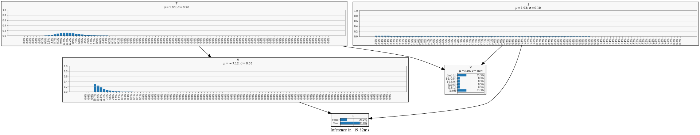
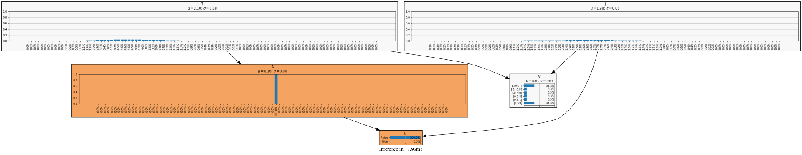
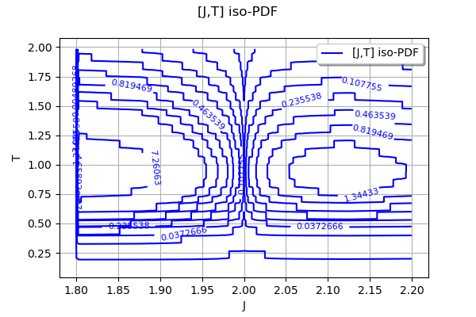
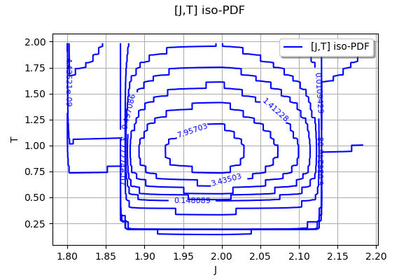

Torque model¶
This example studies the causes of leakage of a mechanical model.
It has several parameters: Torque (T), Joint (J), Angle (A), Vibration (V) and Leak (L).
[20]:
import pyAgrum as gum
import pyAgrum.lib.notebook as gnb
import openturns as ot
import otagrum
import numpy as np
Probabilistic model
[21]:
# Marginal distributions
Torque = ot.LogNormal(0.0, 0.25)
Angle = ot.TruncatedNormal(0.0, 2.0, -8.0, 8.0)
Joint = ot.Uniform(1.8, 2.2)
# Dependence
rho = 0.5
TorqueAngleCopula = ot.NormalCopula(ot.CorrelationMatrix(2, [1.0, rho, rho, 1.0]))
copula = ot.ComposedCopula([TorqueAngleCopula, ot.IndependentCopula(1)])
# Joint distribution if needed
TorqueAngle = ot.ComposedDistribution([Torque, Angle], TorqueAngleCopula)
fullDistribution = ot.ComposedDistribution([Torque, Angle, Joint], copula)
# Leakage angle (rd)
angleMax = 5.0
# Leakage joint (mm)
jointMin = 2.0
jointSpread = 0.1
# Vibration torque (kN.m)
torqueSpread = 2.0
(Discrete) Graphical model
[ ]:
n_ticks = 100
nodes = 16
def completeTicks(range,ticks):
if range is None:
return [float("-inf")]+ticks+[float("inf")]
else:
return [range.getLowerBound()[0]] + ticks + [range.getUpperBound()[0]]
torque_ticks = [
(n_ticks - i) * Torque.getRange().getLowerBound()[0] / (n_ticks + 1) +
(i + 1.0) * Torque.getRange().getUpperBound()[0] / (n_ticks + 1)
for i in range(n_ticks)
]
angle_ticks = [(n_ticks - i) * Angle.getRange().getLowerBound()[0] /
(n_ticks + 1) +
(i + 1.0) * Angle.getRange().getUpperBound()[0] / (n_ticks + 1)
for i in range(n_ticks)]
joint_ticks = [(n_ticks - i) * Joint.getRange().getLowerBound()[0] /
(n_ticks + 1) +
(i + 1.0) * Joint.getRange().getUpperBound()[0] / (n_ticks + 1)
for i in range(n_ticks)]
vibration_ticks = [-1.0, -0.5, 0.0, 0.5, 1.0]
bn = gum.BayesNet()
bn.add(gum.DiscretizedVariable("T", "Torque", completeTicks(Torque.getRange(),torque_ticks)))
bn.add(gum.DiscretizedVariable("A", "Angle", completeTicks(Angle.getRange(),angle_ticks)))
bn.add(gum.DiscretizedVariable("J", "Joint", completeTicks(Joint.getRange(),joint_ticks)))
bn.add(
gum.DiscretizedVariable("V", "Vibration", completeTicks(None,vibration_ticks)))
bn.add(gum.LabelizedVariable("L", "Leak", ["False", "True"]))
bn.addArc("T", "V")
bn.addArc("T", "A")
bn.addArc("J", "V")
bn.addArc("J", "L")
bn.addArc("A", "L")
bn
Discretizations
[24]:
# This function allows to discretize a conditional distribution of X_d knowing X_1,...,X_{d-1} from a joint distribution of (X_1,...,X_d) and a discretization grid.
def discretizeFromJoint(fullDistribution, ticks):
fullDimension = fullDistribution.getDimension()
conditioningDistribution = fullDistribution.getMarginal([i for i in range(fullDimension-1)])
# Add the range bounds to the given ticks
lower = fullDistribution.getRange().getLowerBound()
upper = fullDistribution.getRange().getUpperBound()
expandedTicks = [0]*len(ticks)
for i in range(fullDimension):
expandedTicks[i] = [lower[i]] + ticks[i] + [upper[i]]
# Now perform the full discretization
lengths = [(len(t)-1) for t in expandedTicks]
tuples = ot.Tuples(lengths).generate()
probabilities = ot.Point(len(tuples))
for i in range(len(tuples)):
tuple = tuples[i]
aFull = [expandedTicks[j][tuple[j]] for j in range(fullDimension)]
bFull = [expandedTicks[j][tuple[j]+1] for j in range(fullDimension)]
aConditioning = [expandedTicks[j][tuple[j]] for j in range(fullDimension-1)]
bConditioning = [expandedTicks[j][tuple[j]+1] for j in range(fullDimension-1)]
den = conditioningDistribution.computeProbability(ot.Interval(aConditioning, bConditioning))
if den > 0.0:
num = fullDistribution.computeProbability(ot.Interval(aFull, bFull))
probabilities[i] = num / den
return probabilities
# This function allows to discretize a conditional distribution knowing its conditional density function given as a Function, its conditioning distribution and a discretization grid. WARNING: The result is NOT normalized
def discretizeFromConditionalDensity(conditionalDensity, conditioningDistribution, ticks, useSlowIntegration=True, nodesNumber=32):
fullDimension = conditioningDistribution.getDimension() + 1
if useSlowIntegration:
# Accurate but slow
integrator = ot.IteratedQuadrature()
else:
# Less accurate for non-smooth integrand but fast
ot.ResourceMap.SetAsUnsignedInteger("GaussLegendre-DefaultMarginalIntegrationPointsNumber", nodesNumber)
integrator = ot.GaussLegendre(fullDimension)
# Add the range bounds to the given ticks
lower = list(conditioningDistribution.getRange().getLowerBound())
upper = list(conditioningDistribution.getRange().getUpperBound())
# For the conditioned variable it has to be estimated. We assume that the given
# tick range is a correct margin to get the lower and upper bounds
conditionedMin = min(ticks[fullDimension - 1])
conditionedMax = max(ticks[fullDimension - 1])
delta = conditionedMax - conditionedMin
lower = lower + [conditionedMin - delta]
upper = upper + [conditionedMax + delta]
expandedTicks = [0]*fullDimension
for i in range(fullDimension):
expandedTicks[i] = [lower[i]] + ticks[i] + [upper[i]]
# Now perform the full discretization
lengths = [(len(t)-1) for t in expandedTicks]
tuples = ot.Tuples(lengths).generate()
probabilities = ot.Point(len(tuples))
def kernel(x):
x = np.array(x)
return conditionalDensity(x) * np.array(conditioningDistribution.computePDF(x[:,0:fullDimension-1]))
for i in range(len(tuples)):
tuple = tuples[i]
aFull = [expandedTicks[j][tuple[j]] for j in range(fullDimension)]
bFull = [expandedTicks[j][tuple[j]+1] for j in range(fullDimension)]
num = integrator.integrate(ot.PythonFunction(fullDimension, 1, func_sample=kernel), ot.Interval(aFull, bFull))[0]
probabilities[i] = num
return probabilities
# This function allows to discretize a conditional Bernoulli distribution knowing its conditional probability function given as a Function, its conditioning distribution and a conditional discretization grid.
def discretizeBernoulliFromConditionalProbability(conditionalProbability, conditioningDistribution, ticks, useSlowIntegration=True, nodesNumber=32):
conditioningDimension = conditioningDistribution.getDimension()
if useSlowIntegration:
# Accurate but slow
integrator = ot.IteratedQuadrature()
else:
# Less accurate for non-smooth integrand but fast
ot.ResourceMap.SetAsUnsignedInteger("GaussLegendre-DefaultMarginalIntegrationPointsNumber", nodesNumber)
integrator = ot.GaussLegendre(conditioningDimension)
# Less accurate for non-smooth integrand but fast
ot.ResourceMap.SetAsUnsignedInteger("GaussLegendre-DefaultMarginalIntegrationPointsNumber", 32)
integrator = ot.GaussLegendre(conditioningDimension)
# Add the range bounds to the given ticks
lower = list(conditioningDistribution.getRange().getLowerBound())
upper = list(conditioningDistribution.getRange().getUpperBound())
# Add the range bounds to the given ticks
lower = conditioningDistribution.getRange().getLowerBound()
upper = conditioningDistribution.getRange().getUpperBound()
expandedTicks = [0]*len(ticks)
for i in range(conditioningDimension):
expandedTicks[i] = [lower[i]] + ticks[i] + [upper[i]]
# Now perform the full discretization
lengths = [(len(t)-1) for t in expandedTicks]
tuples = ot.Tuples(lengths).generate()
probabilitiesTrue = [0]*len(tuples)
def kernel(x):
x = np.array(x)
return conditionalProbability(x) * np.array(conditioningDistribution.computePDF(x[:,0:conditioningDimension]))
for i in range(len(tuples)):
tuple = tuples[i]
aConditioning = [expandedTicks[j][tuple[j]] for j in range(conditioningDimension)]
bConditioning = [expandedTicks[j][tuple[j]+1] for j in range(conditioningDimension)]
den = conditioningDistribution.computeProbability(ot.Interval(aConditioning, bConditioning))
if den > 0.0:
num = integrator.integrate(ot.PythonFunction(conditioningDimension, 1, func_sample=kernel), ot.Interval(aConditioning, bConditioning))[0]
probabilitiesTrue[i] = min(1.0, num / den)
probabilities = ot.Point([1.0 - p for p in probabilitiesTrue] + probabilitiesTrue)
return probabilities
[27]:
# Discretization of everything
# Compute P(Leakage = True | Angle = angle, Joint = joint)
def P_LeakageKnowingAngleAndJoint(x):
x = np.array(x)
angle = x[:, 0]
joint = x[:, 1]
s = (1, x.shape[0])
sp = (x.shape[0], 1)
one = np.ones(s)
return (np.minimum(np.abs(angle / angleMax), one) * np.minimum(
one, np.exp(-(joint - jointMin) / jointSpread))).reshape(sp)
# Compute K.p(Vibration = v | Torque = torque, Joint = joint) where K is unknown
def f_VibrationKnowingTorqueAndJoint(x):
x = np.array(x)
joint = x[:, 0]
torque = x[:, 1]
jointRed = joint / jointSpread
torqueRed = torque / torqueSpread
return ((1.0 + jointRed**2 + torqueRed**2)**(-4.0)).reshape(x.shape[0], 1)
AngleKnowingTorque = discretizeFromJoint(TorqueAngle,
[torque_ticks, angle_ticks])
LeakageKnowingAngleAndJoint = discretizeBernoulliFromConditionalProbability(
P_LeakageKnowingAngleAndJoint, ot.ComposedDistribution([Angle, Joint]),
[angle_ticks, joint_ticks], False, nodes)
VibrationKnowingTorqueAndJoint = discretizeFromConditionalDensity(
f_VibrationKnowingTorqueAndJoint, ot.ComposedDistribution([Torque, Joint]),
[torque_ticks, joint_ticks, vibration_ticks], False, nodes)
Discretized Parameters for the BN
[29]:
bn.cpt("J").fillWith(otagrum.Utils.Discretize(Torque, bn.variable("J").toDiscretizedVar()))
bn.cpt("T").fillWith(otagrum.Utils.Discretize(Torque, bn.variable("T").toDiscretizedVar()))
bn.cpt("A").fillWith(list(AngleKnowingTorque)).normalizeAsCPT()
p=gum.Potential().add(bn.variable("J")).add(bn.variable("A")).add(bn.variable("L"))
p.fillWith(list(LeakageKnowingAngleAndJoint))
s=bn.cpt("L").var_names
s.reverse()
p.reorganize(s)
bn.cpt("L").fillWith(p)
p=gum.Potential().add(bn.variable("J")).add(bn.variable("T")).add(bn.variable("V"))
p.fillWith(list(VibrationKnowingTorqueAndJoint))
s=bn.cpt("V").var_names
s.reverse()
p.reorganize(s)
bn.cpt("V").fillWith(p).normalizeAsCPT()
gnb.showInformation(bn)
0.8292385712844264![](data:image/png;base64,iVBORw0KGgoAAAANSUhEUgAAAhsAAABRCAYAAAB7e2SeAAAABHNCSVQICAgIfAhkiAAAAAlwSFlz
AAALEgAACxIB0t1+/AAAADl0RVh0U29mdHdhcmUAbWF0cGxvdGxpYiB2ZXJzaW9uIDIuMS4xLCBo
dHRwOi8vbWF0cGxvdGxpYi5vcmcvAOZPmwAAB1ZJREFUeJzt3X+oX3Udx/HnK2c4pya4jJWGFNQ/
IW6MgS3GqBFGllFEQUVYoH+EKBVh/lFKBBFRQYRRmzZtZTVT+4UVaGiEmZvLZdtfMUys1ojS2Wq0
3v3xPVu3/bj37t77+Z57v+f5gMv93nM+3/N5n8/3uy+vnc8535OqQpIkqZUX9F2AJEmabIYNSZLU
lGFDkiQ1ZdiQJElNGTYkSVJThg1JktSUYUOSJDVl2JAkSU0ZNiRJUlPLTqfxhUkdnrFVZrU4p2o3
3ZNnfMr0DY6tzWz7nt2+zKKwrtXC7Mf/ms1hDI//a477snhfk9PbzuyeNp4xObGWOY7JKZ/Ww/t0
rq/LfPteoDE88dkzbW9hX4tR0+Peq7Pt+5SL5zYmp35NFvrzavr9yEztZrPNBdqXvl+TuY/JbP+N
z9zoqad2/KSqrphpK6cVNg4DG469YY4We3TQ///vUy4/9mFy/PL5b/PY+mY1LvbtLYUaF/v25r/N
ob0PT9zfxVfj0tveUqhxcW1viO/Dhf6smcsYXnttVjILTqNIkqSmDBuSJKkpw4YkSWrKsCFJkpoy
bEiSpKYMG5IkqSnDhiRJasqwIUmSmjJsSJKkpgwbkiSpKcOGJElqyrAhSZKaMmxIkqSmDBuSJKkp
w4YkSWrKsCFJkpoybEiSpKYMG5IkqSnDhiRJasqwIUmSmjJsSJKkpgwbkiSpKcOGJElqyrAhSZKa
MmxIkqSmDBuSJKkpw4YkSWrKsCFJkpoybEiSpKYMG5IkqSnDhiRJaipVNfvGyf3Aynn0txI4MI/n
a24c9/FzzPvhuPfDce/HYhj3A1V1xUyNTitszFeSx6pq7dg6FOC498Ex74fj3g/HvR9LadydRpEk
SU0ZNiRJUlPjDhtfHXN/GnHcx88x74fj3g/HvR9LZtzHes6GJEkaHqdRJElSU2MJG0luS7I/yW/H
0Z8gycVJHkyyJ8mTSa7vu6YhSHJWkkeT/KYb91v6rmkokpyR5PEkP+y7liFJsi/J7iS7kjzWdz1D
kOT8JNuT7O0+4y/vu6aZjGUaJckG4CBwR1W9pnmHIskqYFVV7UxyLrADeFtV/a7n0iZakgArqupg
kjOBXwDXV9UjPZc28ZJ8GFgLnFdVV/Zdz1Ak2Qesraq+v+9hMJJsBR6uqs1JXgicXVV/67uu6Yzl
yEZVPQT8dRx9aaSq/lhVO7vHzwF7gJf1W9Xkq5GD3Z9ndj+eGNVYkouANwOb+65FainJecAGYAtA
VR1e7EEDPGdjEJJcAqwGftVvJcPQHc7fBewHflZVjnt7XwQ+Bvyn70IGqICfJtmR5Jq+ixmAVwB/
AW7vpg03J1nRd1EzMWxMuCTnAHcDN1TVs33XMwRVdaSqLgMuAtYlceqwoSRXAvurakfftQzU+qpa
A7wJ+FA3ba52lgFrgFurajXwPHBjvyXNzLAxwbpzBu4GtlXV9/quZ2i6Q5s/B2a8b4DmZT3w1u7c
gbuA1yf5Rr8lDUdVPdP93g/cA6zrt6KJ9zTw9JQjptsZhY9FzbAxoboTFbcAe6rq833XMxRJXpzk
/O7xcmATsLffqiZbVX28qi6qqkuAdwMPVNV7ey5rEJKs6E5ApzuU/0bAqw4bqqo/AX9I8upu0RuA
RX/i/7JxdJLkW8BGYGWSp4FPVtWWcfQ9YOuB9wG7u/MHAG6qqh/3WNMQrAK2JjmDUZj/TlV5KaYm
1UuAe0b/t2EZ8M2qur/fkgbhOmBbdyXK74Gre65nRn6DqCRJasppFEmS1JRhQ5IkNWXYkCRJTRk2
JElSU4YNSZLU1FgufZW0OCQ5AuyesuiuqvrMNO03Aoer6peta5M0uQwb0rAc6r5KfbY2Mrpj8wlh
I8myqvr3QhUmaXL5PRvSgCQ5WFXnnGT5PmAr8BZGd6p9J/BP4BHgCKMbP10HfJDRHZxXAzuBTwO3
Mbo51D+Aa6rqiSQ3A69kdKfhi4HPVtXXktwJbK+q+7p+twHfrqrvt9pnSf3znA1pWJYn2TXl511T
1h3obqh1K/DRqtoHfAX4QlVdVlUPd+1eBWyqqo8AtwCPV9WlwE3AHVO2dymj275fDnwiyUsZ3QL+
aoAkLwJeC/itttKEcxpFGpbpplGO3qxvB/D2abbx3ao60j1+HfAOgKp6IMkFXYgAuK+qDgGHkjwI
rKuqe5N8OcmFXR93OxUjTT7DhqSj/tX9PsL0nw3PT3mck6yv434fv/xO4D2Mbpr2gdOsUdIS5DSK
pOk8B5w7zfqHGAWHo1euHKiqZ7t1VyU5K8kFjE40/XW3/OvADQBV9eTClyxpsfHIhjQsy6fcBRjg
/qq6cZr2PwC2J7mK0Qmix7sZuD3JE4xOEH3/lHWPAj8CXg58qqqeAaiqPyfZA9w7992QtJR4NYqk
BdddjXKwqj53knVnM/qujzVV9fdx1yZp/JxGkTQ2STYBe4EvGTSk4fDIhiRJasojG5IkqSnDhiRJ
asqwIUmSmjJsSJKkpgwbkiSpKcOGJElq6r+eItm+Y9wm3AAAAABJRU5ErkJggg==
) 6.3552503940680385
6.3552503940680385
![](data:image/png;base64,iVBORw0KGgoAAAANSUhEUgAAAhsAAABRCAYAAAB7e2SeAAAABHNCSVQICAgIfAhkiAAAAAlwSFlz
AAALEgAACxIB0t1+/AAAADl0RVh0U29mdHdhcmUAbWF0cGxvdGxpYiB2ZXJzaW9uIDIuMS4xLCBo
dHRwOi8vbWF0cGxvdGxpYi5vcmcvAOZPmwAAB1ZJREFUeJzt3X+oX3Udx/HnK2c4pya4jJWGFNQ/
IW6MgS3GqBFGllFEQUVYoH+EKBVh/lFKBBFRQYRRmzZtZTVT+4UVaGiEmZvLZdtfMUys1ojS2Wq0
3v3xPVu3/bj37t77+Z57v+f5gMv93nM+3/N5n8/3uy+vnc8535OqQpIkqZUX9F2AJEmabIYNSZLU
lGFDkiQ1ZdiQJElNGTYkSVJThg1JktSUYUOSJDVl2JAkSU0ZNiRJUlPLTqfxhUkdnrFVZrU4p2o3
3ZNnfMr0DY6tzWz7nt2+zKKwrtXC7Mf/ms1hDI//a477snhfk9PbzuyeNp4xObGWOY7JKZ/Ww/t0
rq/LfPteoDE88dkzbW9hX4tR0+Peq7Pt+5SL5zYmp35NFvrzavr9yEztZrPNBdqXvl+TuY/JbP+N
z9zoqad2/KSqrphpK6cVNg4DG469YY4We3TQ///vUy4/9mFy/PL5b/PY+mY1LvbtLYUaF/v25r/N
ob0PT9zfxVfj0tveUqhxcW1viO/Dhf6smcsYXnttVjILTqNIkqSmDBuSJKkpw4YkSWrKsCFJkpoy
bEiSpKYMG5IkqSnDhiRJasqwIUmSmjJsSJKkpgwbkiSpKcOGJElqyrAhSZKaMmxIkqSmDBuSJKkp
w4YkSWrKsCFJkpoybEiSpKYMG5IkqSnDhiRJasqwIUmSmjJsSJKkpgwbkiSpKcOGJElqyrAhSZKa
MmxIkqSmDBuSJKkpw4YkSWrKsCFJkpoybEiSpKYMG5IkqSnDhiRJaipVNfvGyf3Aynn0txI4MI/n
a24c9/FzzPvhuPfDce/HYhj3A1V1xUyNTitszFeSx6pq7dg6FOC498Ex74fj3g/HvR9LadydRpEk
SU0ZNiRJUlPjDhtfHXN/GnHcx88x74fj3g/HvR9LZtzHes6GJEkaHqdRJElSU2MJG0luS7I/yW/H
0Z8gycVJHkyyJ8mTSa7vu6YhSHJWkkeT/KYb91v6rmkokpyR5PEkP+y7liFJsi/J7iS7kjzWdz1D
kOT8JNuT7O0+4y/vu6aZjGUaJckG4CBwR1W9pnmHIskqYFVV7UxyLrADeFtV/a7n0iZakgArqupg
kjOBXwDXV9UjPZc28ZJ8GFgLnFdVV/Zdz1Ak2Qesraq+v+9hMJJsBR6uqs1JXgicXVV/67uu6Yzl
yEZVPQT8dRx9aaSq/lhVO7vHzwF7gJf1W9Xkq5GD3Z9ndj+eGNVYkouANwOb+65FainJecAGYAtA
VR1e7EEDPGdjEJJcAqwGftVvJcPQHc7fBewHflZVjnt7XwQ+Bvyn70IGqICfJtmR5Jq+ixmAVwB/
AW7vpg03J1nRd1EzMWxMuCTnAHcDN1TVs33XMwRVdaSqLgMuAtYlceqwoSRXAvurakfftQzU+qpa
A7wJ+FA3ba52lgFrgFurajXwPHBjvyXNzLAxwbpzBu4GtlXV9/quZ2i6Q5s/B2a8b4DmZT3w1u7c
gbuA1yf5Rr8lDUdVPdP93g/cA6zrt6KJ9zTw9JQjptsZhY9FzbAxoboTFbcAe6rq833XMxRJXpzk
/O7xcmATsLffqiZbVX28qi6qqkuAdwMPVNV7ey5rEJKs6E5ApzuU/0bAqw4bqqo/AX9I8upu0RuA
RX/i/7JxdJLkW8BGYGWSp4FPVtWWcfQ9YOuB9wG7u/MHAG6qqh/3WNMQrAK2JjmDUZj/TlV5KaYm
1UuAe0b/t2EZ8M2qur/fkgbhOmBbdyXK74Gre65nRn6DqCRJasppFEmS1JRhQ5IkNWXYkCRJTRk2
JElSU4YNSZLU1FgufZW0OCQ5AuyesuiuqvrMNO03Aoer6peta5M0uQwb0rAc6r5KfbY2Mrpj8wlh
I8myqvr3QhUmaXL5PRvSgCQ5WFXnnGT5PmAr8BZGd6p9J/BP4BHgCKMbP10HfJDRHZxXAzuBTwO3
Mbo51D+Aa6rqiSQ3A69kdKfhi4HPVtXXktwJbK+q+7p+twHfrqrvt9pnSf3znA1pWJYn2TXl511T
1h3obqh1K/DRqtoHfAX4QlVdVlUPd+1eBWyqqo8AtwCPV9WlwE3AHVO2dymj275fDnwiyUsZ3QL+
aoAkLwJeC/itttKEcxpFGpbpplGO3qxvB/D2abbx3ao60j1+HfAOgKp6IMkFXYgAuK+qDgGHkjwI
rKuqe5N8OcmFXR93OxUjTT7DhqSj/tX9PsL0nw3PT3mck6yv434fv/xO4D2Mbpr2gdOsUdIS5DSK
pOk8B5w7zfqHGAWHo1euHKiqZ7t1VyU5K8kFjE40/XW3/OvADQBV9eTClyxpsfHIhjQsy6fcBRjg
/qq6cZr2PwC2J7mK0Qmix7sZuD3JE4xOEH3/lHWPAj8CXg58qqqeAaiqPyfZA9w7992QtJR4NYqk
BdddjXKwqj53knVnM/qujzVV9fdx1yZp/JxGkTQ2STYBe4EvGTSk4fDIhiRJasojG5IkqSnDhiRJ
asqwIUmSmjJsSJKkpgwbkiSpKcOGJElq6r+eItm+Y9wm3AAAAABJRU5ErkJggg==) 6.3552503940680385
6.3552503940680385[30]:
gnb.showInference(bn,size="20")

[ ]:
gnb.showInference(bn,evs={"L":True},size="20")
[31]:
gnb.showInference(bn,evs={"L":False,"A":"0.2"},size="20")

[37]:
ie=gum.LazyPropagation(bn)
ie.addJointTarget(["T","J"])
ie.setEvidence({"L":True})
ie.makeInference()
[38]:
distrib=otagrum.Utils.FromPotential(ie.jointPosterior(["T", "J"]))
distrib.drawPDF()
[38]:

[39]:
ie=gum.LazyPropagation(bn)
ie.addJointTarget(["T","J"])
ie.setEvidence({"L":False})
ie.makeInference()
[40]:
distrib=otagrum.Utils.FromPotential(ie.jointPosterior(["T","J"]))
distrib.drawPDF()
[40]:
